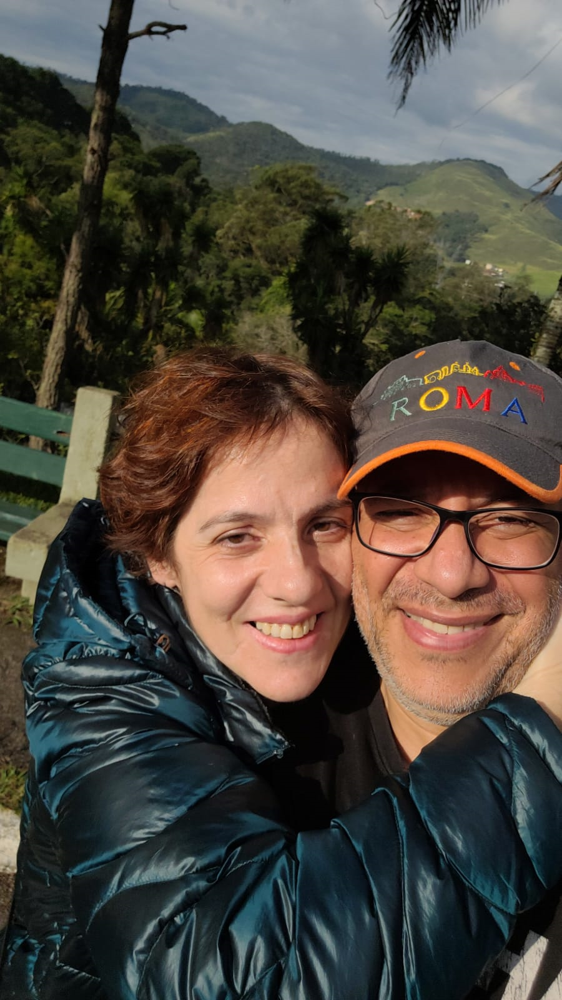

About me!
Jorge
My name's Jorge. I don't have a nickname. I headed into information technology because I love areas such as math, physics, and computation. My goal is to earn a Bachelor's degree in IT. I love to practice Muay-Thai, read books, watch movies, get out and travel with my wife, Raquel, and so forth.
I have two adult sons. My youngest served a mission in Fortaleza, Brazil. He is married and a lawyer. My oldest one is a Ultimate Fighting Championship (UFC) fighter, and he has two children. I'm a professor at a university. I like Computation Science, but I'm happy to enroll in Web Design. As a professor, I intend to use this knowledge to build simulators for my classes.
I've been a member of the Church of Jesus Christ of Latter-Day Saints for 35 years. Nowadays, I'm the first counselor in the priesthood quorum. I love a quote often used by our leaders: "We are not human beings having a spiritual experience. We are beings living through a human experience. "